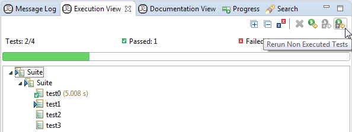
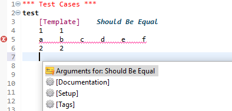

In project configuration file red.xml arguments list can be provided to each library so that specification files will be generated for those libraries which require arguments. There is also a distinction between static and dynamic libraries introduced and it is possible to define multiple arguments lists for the latter. For more please refer to topic covering libraries configuration.

It is now possible to declare a breakpoint which will pause the execution when specified keyword fails. For more on that please refer to Breakpoints topic.

A new action in Execution view toolbar makes it possible to re-run the suites which were not executed in previous execution.
Tests or tasks which uses templates are now validated and colouring is fixed. Additionally content assistant will not show keywords proposals in such tests or tasks and instead a single proposal for template arguments will be presented.
Content assistant will show NONE proposal in places where it makes sense (settings like [Tags], [Setup], [Teardown], [Template]). Additionally coloring and validation has been fixed in those places.

For keyword called using its long name (a name preceded with a source name - a library or resource
and a dot) the color of a source prefix can be changed. By default it is set to be the same as a
color of keyword call.
Preference can be changed at
Robot Framework -> Editor -> Syntax Coloring page.
The keywords defined in libraries (either standard or user's) can be painted differently than those
defined locally or in resource files. WARNING: deciding if keyword is defined in library or not
is an operation which cannot be performed in UI thread so it is done in background and then applied. You may
see the effect of keywords being repainted while typing.
Preference can be changed at
Robot Framework -> Editor -> Syntax Coloring page.

It is possible to change a preference which enables or disables hyperlinking to library keyword source.
Once disabled you will not be able to Ctrl+Click on a keyword to navigate to the source (only if
keyword is from library) however it will be still possible to use Open declaration action from context
menu.
Preference can be changed at
Robot Framework -> Editor page.
After keyword proposal is chosen from content assistant in source editor the arguments of a keyword are inserted and linked editing mode is activated allowing to easily jump between arguments using Tab/Shift+Tab. From now if content of linked mode region is deleted and users jumps out of the region the backslash character will be placed there automatically.
New marker with INFO severity is reported for masked keywords calls.
Problem severity can be changed at
Robot Framework -> Errors/Warnings page in name shadowing and conflicts section.